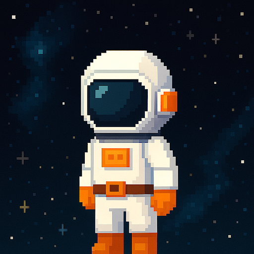
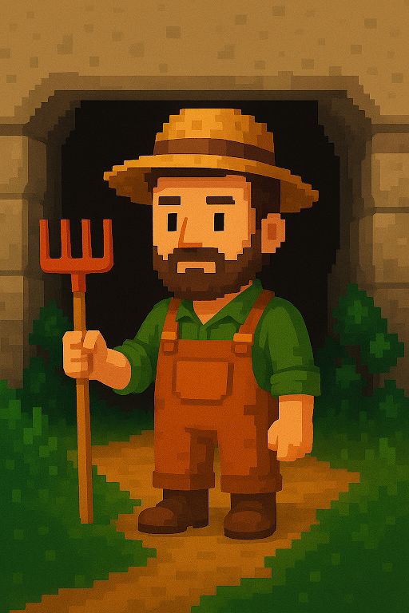

STAR STORIES
Space weather through
in the eyes of earthlings

ASTRONAUT
Cosmos explorer, direct witness to solar storms in space

FARMER
Guardian of the earth, observer of how space weather affects crops
SCIENTIFIC
Universe researcher, unravelling the mysteries of space weather
KID
Young dreamer, discovering the wonders of space with curious eyes
BACK TO CHARACTERS
Its History
Here you can write the story of this character and how they experience the space weather...